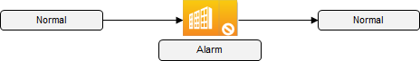
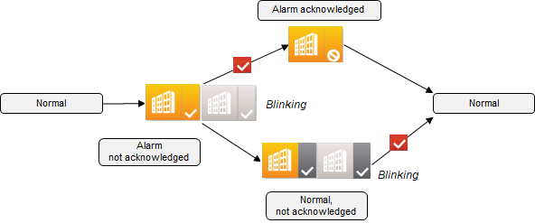
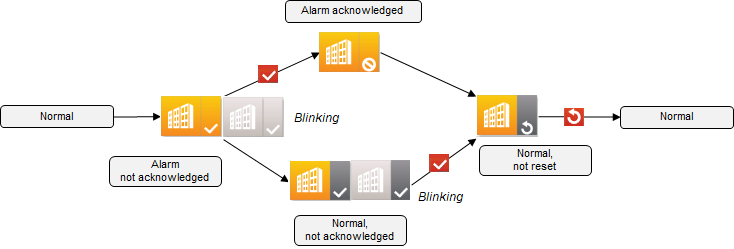
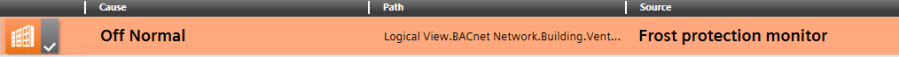
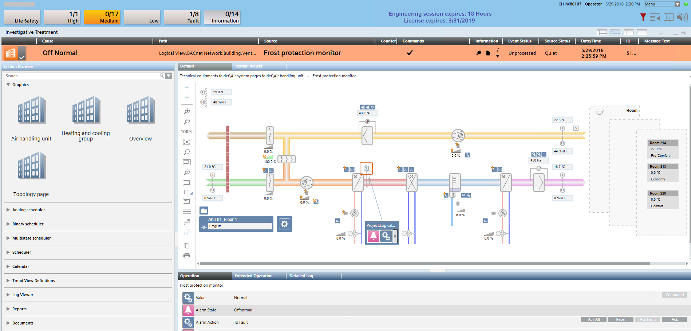
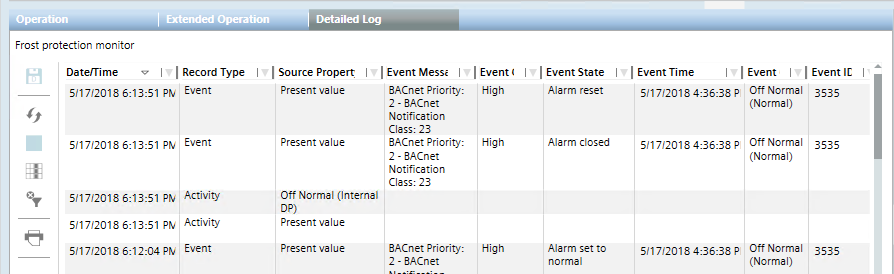
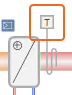

Acknowledging Different Alarm Types
Your system controls your building automation and system plants. Sometimes events occur (for example, a fault) that the operator must know about and that require user intervention. The alarm system processes and issues the appropriate reports (for example, to a printer) for such events.
Your system reacts automatically to a fault (for example, the ventilation plant is automatically locked during a fire alarm). An alarm is issued for a control deviation (for example, a dirty filter only triggers a simple alarm).
In both cases, the system changes to the alarm status and a corresponding alarm is issued. The system returns to normal after the cause of the alarm was eliminated and the system was reset by the operator.
Simple Alarm
Simple alarms (or alarm objects) do not require you to acknowledge or reset. Normal operations resume when the monitored condition (for example, a dirty filter) returns to normal.

Basic Alarm
More important alarms (for example, lack of water) must be acknowledged. After eliminating the cause of the alarm state and acknowledging it, the plant operations return to normal.

Extended Alarm
In the case of an extended alarm (for example, frost alarm), once the monitored state returns to the normal range, resetting will return the plant to normal. This is to ensure that important alarms are not overlooked once the alarm condition clears.

Simple: Example of a Filter Alarm
Scenario: A dirty filter triggers a Low alarm.
- In the Summary bar, click Audio Alert .
- The icon changes to muted and the sound stops.
- In the Summary bar, click Low .
- The alarm table filters the information to the filter alarm.
- Select the alarm row to get more information
- Clean or replace the dirty filter.
- The icon changes to .
- No further action is required.
Basic: Example of a Pump Alarm
Scenario: The thermo overload of a pump triggers a Medium alarm.
- In the Summary bar, click Audio Alert .
- The icon changes to muted and the sound stops.
- In the Summary bar, click Medium .
- The alarm table filters the information to the frost alarm.
- Select the alarm row.
- In the Commands column, click Acknowledge .
- The alarm status changes to .
- Identify and remove the cause of the pump alarm.
- The icon changes to .
- No further action is required.
Extended: Example of a Frost Alarm with Investigative Treatment
Scenario: A lack of warm water in the pre-heater triggers a High alarm.
- In the Summary bar, click Audio Alert .
- The icon changes to muted and the sound stops.
- In the Summary bar, click High .
- The alarm table filters the information to the frost alarm.

- Select the alarm row and double-click .
- The alarm row displays on top of the graphics and stays open until you click again.
- In the Commands column, click Acknowledge .
- The alarm status changes to .
- Identify the cause of the frost alarm.
- Once you have removed the cause of the frost alarm, in the Commands column, click Reset .
- The icon changes to .
- Click .
- The alarm list displays.

Detailed Information on a Frost Alarm
Scenario: You want to check how often the frost alarm has been triggered recently.

- On the graphics page, select the frost protection monitor

. - Click the window title bar
 or
or  .
. - The Contextual pane opens.
- Select the Detailed Log tab.
- Proceed as required to filter the information.